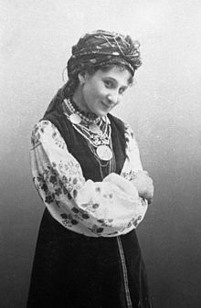
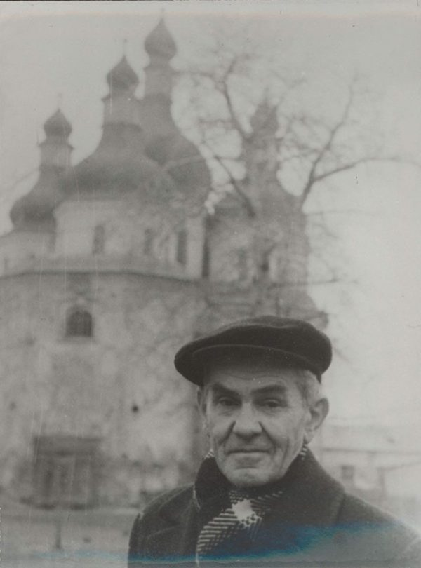
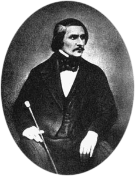

Марія Заньковецька — видатна українська актриса і театральна діячка, провідна зірка українського театру кінця 19 і початку 20 століть.

Народилася під Ніжином у селі Заньки. Загалом прожила у місті 12 років. У Ніжині були її перші виступи у театрі, тут же вона створила свою власну професійну трупу, яка склала кістяк професійного українського театру. У місті на площі Заньковецької їй було встановлено пам’ятник.
Іван Спаський – радянський історик, провідний фахівець із російської нумізматики.

Народився і навчався у Ніжині. Він став головним охоронцем відділу нумізматики Державного Ермітажу. Був засновник радянської (російської, а через своїх учнів також української та білоруської) наукової нумізматичної школи.

У 1821-1828 Гоголь навчався у Ніжинській гімназії вищих наук, де вперше виступив на сцені гімназійного театру як актор і режисер-постановник вистав «Едіп в Афінах», «Урок дочкам», «Лукавін» та багатьох інших. Майстерно зіграв роль Простакової у виставі «Недоросль».
У гімназії Гоголь особливо охоче вивчав давню українську історію, народні звичаї та усну народну творчість, з якими знайомився не лише з друкованих джерел, а й на ніжинських базарах, у передмісті Магерки, де мав багато знайомих. З їх уст він записував різні словечка місцевих жителів, коротенькі історії, анекдоти у свою «Книгу всякой всячены». Пізніше ніжинські типи, окремі сценки увійшли до творів «Вечори на хуторі біля Диканьки» і «Миргород».
У Ніжині Гоголь написав свої перші літературні твори і опублікував деякі з них у рукописних журналах та альманахах. Тут з'явилися його вірші «Италия», «Новоселье», «Непогода», «Две рыбки», «Битва при Калке», поема «Ганс Кюхельгартен», сатири «Насмешнику некстати», «Нечто о Нежине, или Дуракам закон не писан», драматичні твори.
Також мешканці Ніжина можуть похвалитися своєю „Вієвою церквою”. За місцевими переказами, саме тут сталися події, що і надихнули Миколу Гоголя на написання моторошної історії про бурсака і панночку.
В одному із колишніх Ніжинських передмість – Магерках – розташована старовинна Хрестовоздвиженська церква. За часів Миколи Гоголя саме в Магерках проходили найвеселіші вечорниці і жили найкрасивіші дівчата. На одній із таких молодіжних гулянок майбутній класик і почув страшну історію, яка лягла в основу його повісті „Вій”.
Розповідали, що колись давно у місцевого сотника померла красуня донька. Тіло поклали у Хрестовоздвиженській церкві, а молитви над ним читав молодий семінарист. Уночі хлопець припинив читання і підійшов до труни. Чи то хотів подивитися на померлу красуню, чи дорогоцінну каблучку з її пальця зняти. Так чи інакше, але дівчина раптом встала у труні, а нещасливий семінарист помер на місці від розриву серця.
Микола Гоголь доповнив народну легенду страшними подробицями і створив один із своїх наймістичніших творів.